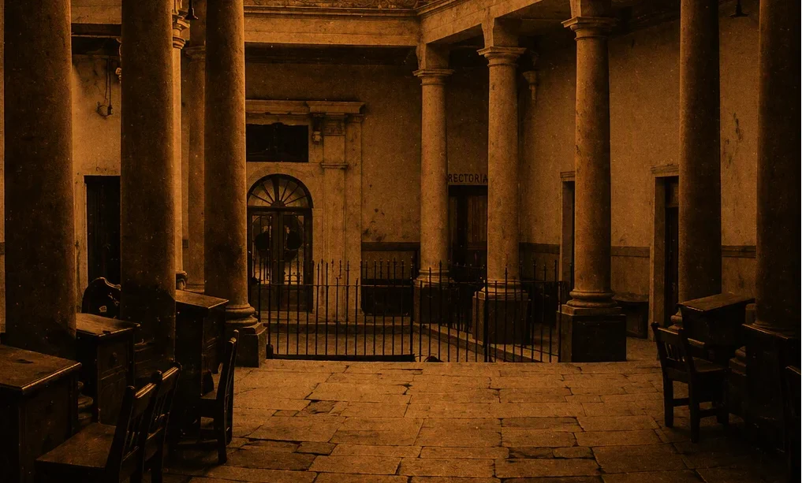
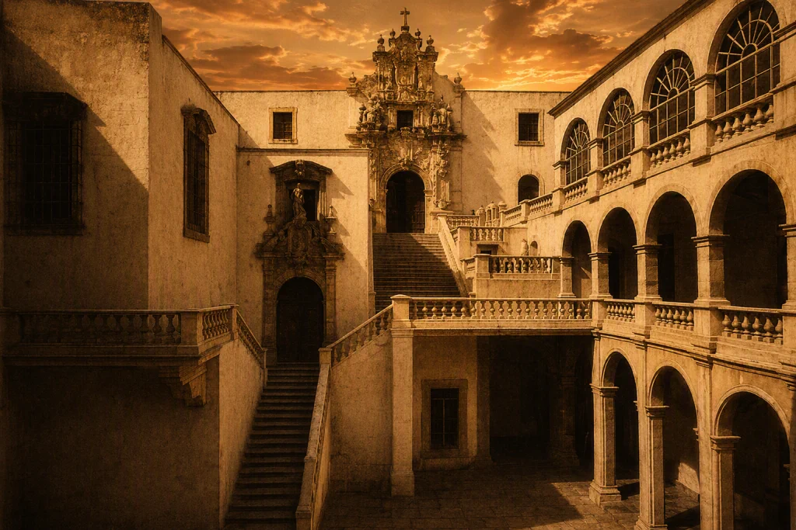

1732–1870 · Origen de una identidad que permanece
Antes de que existieran aulas como hoy las conocemos, ya había en Guanajuato una inquietud constante: formar, acompañar y construir comunidad a través del conocimiento.
Esa inquietud no surgió de manera repentina. Fue tomando forma lentamente en espacios donde la enseñanza era un acto profundamente humano.

Se establece el Hospicio de la Santísima Trinidad como punto de partida de la tradición educativa en Guanajuato.
Más que una institución, representaba una forma de enseñanza vinculada con el acompañamiento social y moral.

La educación adquiere estructura y permanencia bajo la influencia de la Nueva España.
México cambia.
La educación también.
Se consolida el Colegio del Estado, marcando un cambio de sentido en la educación.
La educación se orienta hacia la formación de ciudadanos y pensamiento crítico.
La cercanía entre quienes enseñan y quienes aprenden
El sentido de comunidad
La formación con propósito humano
La permanencia de valores
Mucho antes de Facultades o Campus, ya existía una comunidad educativa en formación.
Se adapta
Se transforma
Se traslada
Lo que aquí inicia no es solo una cronología, sino el origen de una identidad educativa.
Algunas historias son institucionales. Otras profundamente humanas.